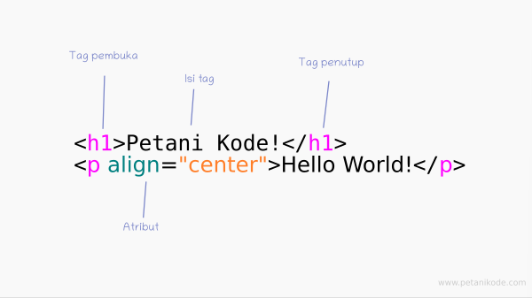

Belajar HTML : Apa itu Tag, Elemen, dan Atribut dalam HTML
Tag, elemen, dan atribut merupakan tiga bagian penting yang ada di dalam HTML. Bagi kamu yang baru belajar HTML, wajib hukumnya untuk mengetahui ketiga Hal ini.
Apa itu Tag?
Tag adalah sebuah penanda awalan dan akhiran dari sebuah elemen di HTML. Tag dibuat dengan kurung siku (<...>), lalu di dalamnya berisi nama tag dan kadang juga ditambahkan dengan atribut.
Tag selalu ditulis berpasangan. Ada tag pembuka dan ada tag penutupnya. Namun, ada juga beberapa tag yang tidak memiliki pasangan penutup. Tag penutup ditulis dengan menambahkan garis miring (/) di depan nama tag.
Apa itu Elemen?
Elemen dalam HTML adalah sebuah komponen yang menyusun dokumen HTML. Elemen kadang juga disebut sebagai node, karena ia merupakan salah satu jenis node yang menyusun dokumen HTML dalam diagram HTML tree.
Elemen dibentuk dari tag pembuka, isi tag, dan tag penutup. Kadang juga ditambahkan beberapa atribut. contoh:
.png)
Apa itu Atribut?
Atribut adalah kata khusus yang berada di dalam tag pembuka. Atribut juga disebut sebagai modifier yang akan menentukan perliaku dari elemen.
Atribut adalah informasi atau properti tambahan suatu tag atau elemen HTML. Tag bisa mempunyai satu atau beberapa atribut sekaligus. Beberapa tag tidak mempunyai atribut. Berikut beberapa aturan tentang atribut :
.png)
- Hampir semua tag pada HTML bisa mempunyai atribut.
- Atribut memberikan informasi tambahan sebagai petunjuk bagi web browser untuk menampilkan tag tersebut.
- Atribut selalu berada dalam tag pembuka pada setiap tag pada HTML.
- Atribut selalu ditulis dalam bentuk pasangan nama atribut / nilai atribut dengan format nama atribut=nilai atribut.